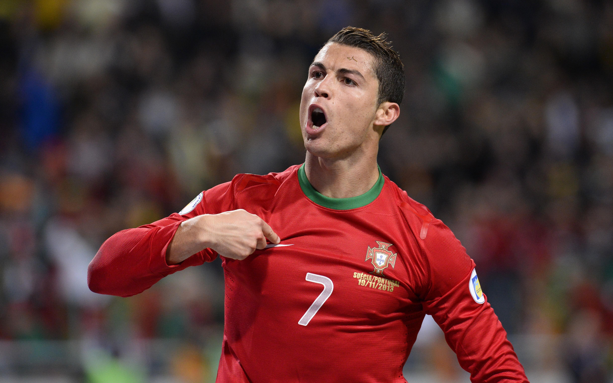
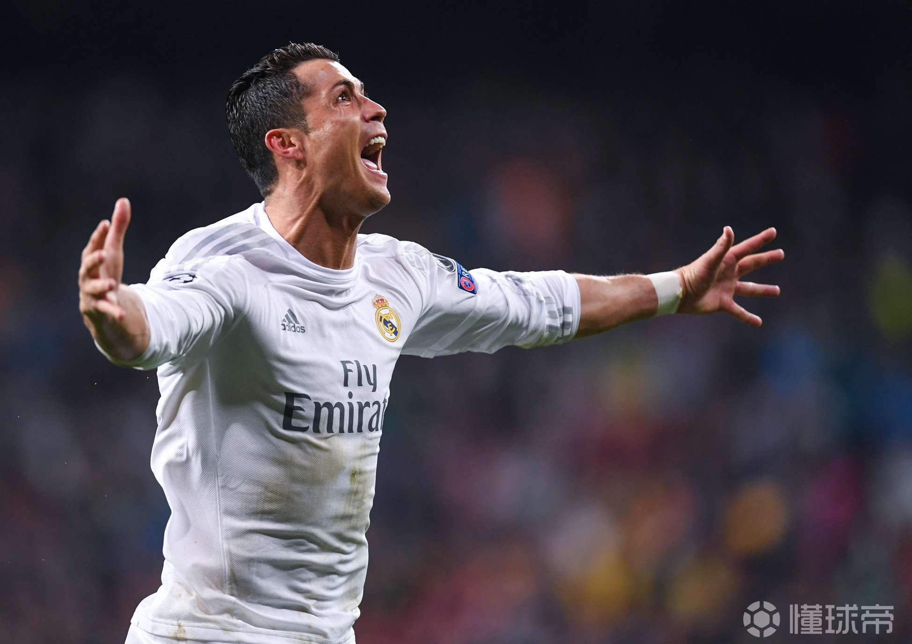
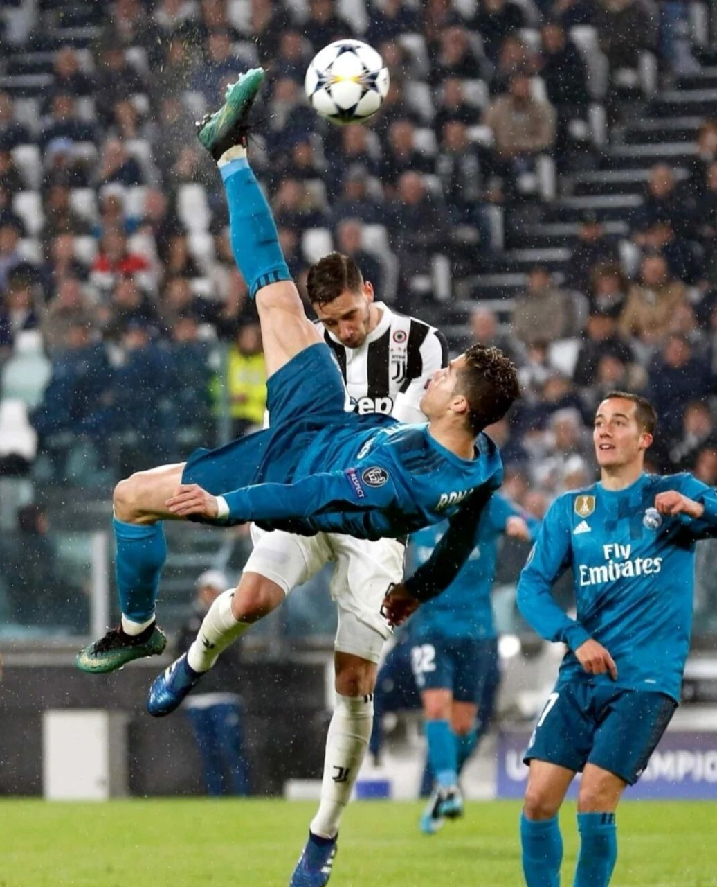
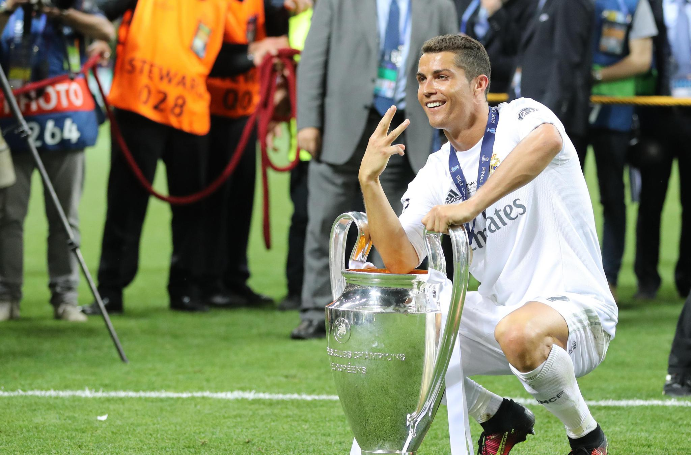

|  | |||||
| 首页 | 成长经历 | 职业生平 | 重要荣誉 | 精彩瞬间 | 精神与影响力 |
足坛最璀璨的巨星，绿茵场的刺客之王 ——克里斯蒂亚诺·罗纳尔多 |
|||||
| 2016年欧冠四分之一决赛首回合，皇马遭遇重创，0 - 2落后于沃尔夫斯堡。但次回合回到主场，C罗宛如天神下凡，上演了帽子戏法。他一次次地突破对方防线，一次次地将球送入球门，带领球队3 - 2逆转。这场比赛，C罗用行动诠释了什么叫永不放弃，什么叫王者风范。 |  |
|  | 2017 - 2018赛季欧冠四分之一决赛皇马对阵尤文图斯的比赛中，Cs罗那记惊世骇俗的倒钩破门，堪称足球艺术的极致展现。他高高跃起，身体在空中舒展成一道优美的弧线，足球如炮弹般飞入球门。那一刻，就连尤文图斯的球迷都被他的精彩表现所征服，起立鼓掌。这个倒钩进球，不仅仅是一个进球，更是足球史上的一个经典画面，被无数球迷反复回味。 |
| 2018年欧冠决赛，皇马与利物浦狭路相逢，C罗再次成为关键先生。他在比赛中首开纪录，为球队的胜利奠定了基调。最终皇马3 - 1战胜利物浦，实现了欧冠三连冠的伟大壮举。C罗在这场比赛中的表现，是皇马欧冠王朝的重要拼图，他就像一把利刃，总是在关键时刻为球队披荆斩棘。 |  |